世界で一番人気のオンライン対戦ゲームというと・・・
APEX LEGENDS？
VALORANT？
FORTNITE？
全部有名ですが・・・違います『League of Legends』です。
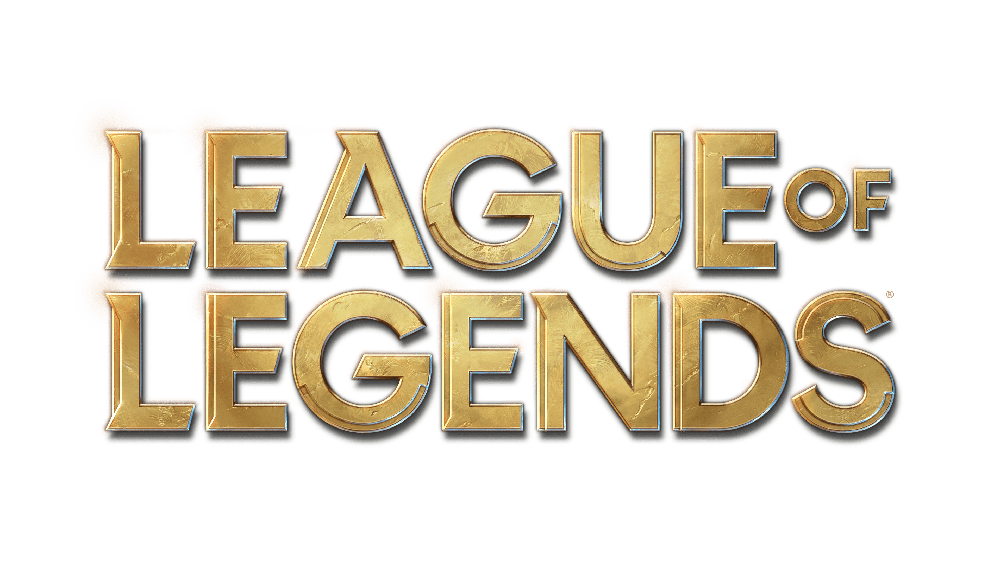
・・・え、何？聞いたことない？
じゃあ覚えてください！『League of Legends』です！！！
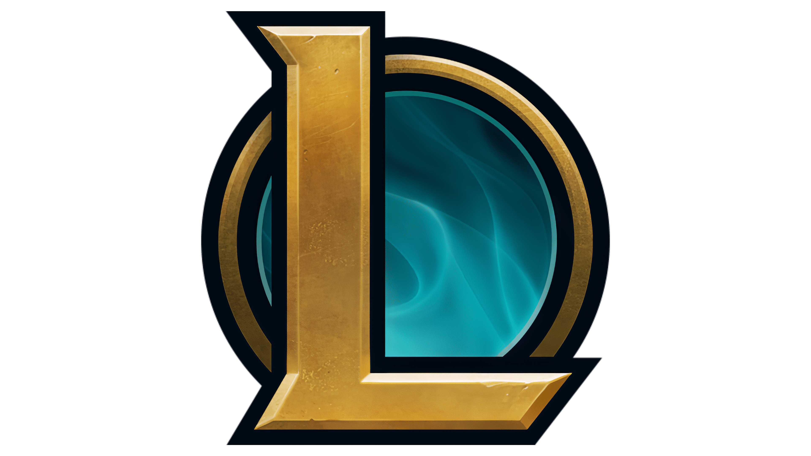
聞いたことあるけどやってない？
難しそう？民度が悪いって聞いた？
・・・と色んな理由をつけて、結局LOLをやってないそこのキミには、今日からLOLの沼に浸かってもらおう。
ただ、全部を解説しだすと数日かかるので、今回は必要最低限の知識に絞って紹介をしていこう。
そもそもLeague of Legendsって？
League of Legends（LOL）は、2009年からRIOTGAMESが運営しているMOBAというジャンルの5vs5の対戦ゲーム。
個人技による逆転やチームでの戦略の奥の深さが高い競技性を生み、プレイヤーからの高い評価を長年受け続けている、まさに老舗のようなオンラインゲーム。
プレイヤーの総人口はなんと中国プレイヤーを除いても1億5000万人で、実はテニスプレイヤーの総人口よりも多かったりする。
サービス開始から2週間に一度というペースで行われる絶え間ないアップデートのおかげで、環境が変わり続けることも未だに人気の要因の一つと言えるだろう。
Eスポーツについて知っている人なら誰しも聞いたことがあるであろう世界的プロゲーマーのあのFAKERも、LOLのプレイヤーの1人だ。
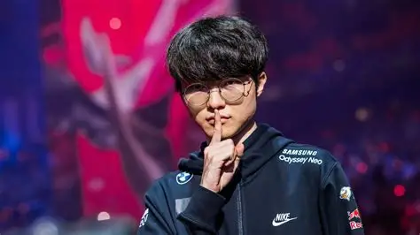
↑FAKER
難しそうに見えて実はシンプル！ルール説明
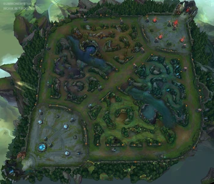
5vs5のチームゲームであるLOL。
上の画像の通りのマップ、サモナーズリフトという戦場に降り立った両チームは、相手チームの拠点側にある、「ネクサス」というオブジェクトを巡って競い合うことになる。
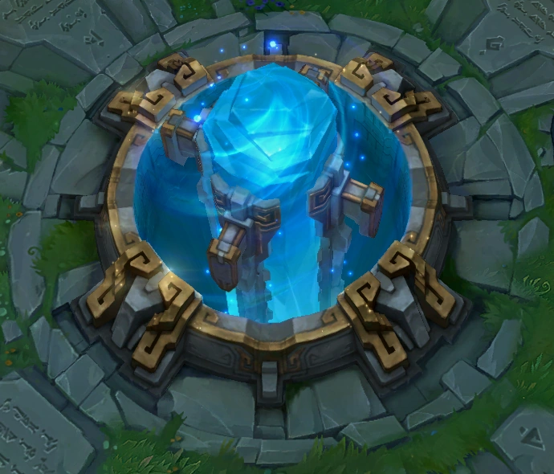
先に敵陣のネクサスを壊したチームの勝ち！以上。
ずっとLOLを難しそうなんて敬遠していたそこのキミ、実はLOLのルールってこれだけ。意外と簡単でしょ？
このゲームが難しいとよく言われているのは、そこに至るまでの過程にある。
ネクサスを守るタワー、そしてそのタワーを守る敵チャンピオン。それら全てを突破し敵チームのネクサスにたどり着くには、まず敵より強くならなければいけない・・・でも、強くなるってどうやって？
そこで出てくるのが、RPGゲームなどでよく出てくるアレだ。
そう──ゴールド、経験値、そしてバフ。これがLOLにおける勝利の条件の全てとも言える。
これらを集めて、自身のチャンピオンを強化し、より大きな戦力となることが第一目標となる。
ゴールドでアイテムを購入し、経験値でレベルを上げて、試合時間で出現するモンスターを倒してバフを獲得することでチーム全体を大幅強化し、敵ネクサスを狙う。
これがLOLというゲームの大まかな流れだ。
バロンナッシャー
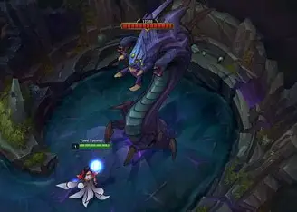
試合時間２５分以降に出現する「バロンナッシャー」。倒すことでチーム全体を大幅に強化し、試合を決定づけるほどの強力なバフだ。
ドレイク
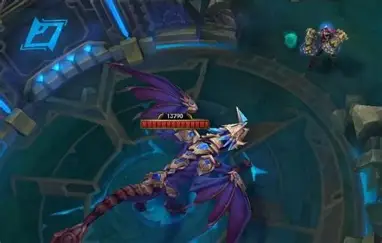
試合時間５分おきに出現する「ドレイク」。倒すことで永続的なバフを獲得できる。
ゴールドと経験値を効率良く集めるために、プレイヤーの５人はそれぞれが事前に選択した「レーン」に向かい、この小さな「ミニオン」を倒すことでゴールドと経験値を獲得していく。（レーンについては後述）
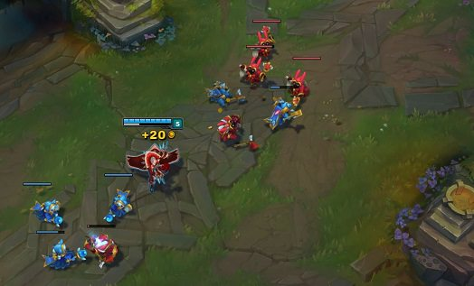
ただし、ゴールドに限ってはミニオンに最後の一撃・・・つまりとどめを刺す（これを「ラストヒット」という）ことで獲得する。というのが基本的なゴールドの獲得方法になっている。
集めたゴールドを消費して、アイテムを購入してみよう。
アイテムの種類も沢山あるけど、とりあえず「おすすめの一番左」を買えば問題ナシだ。
ここまで解説してきたゴールド、経験値、バフ・・・。
敵チームのネクサスを壊すために必要なものでしたが、忘れてはいけないのが敵チャンピオンの存在。
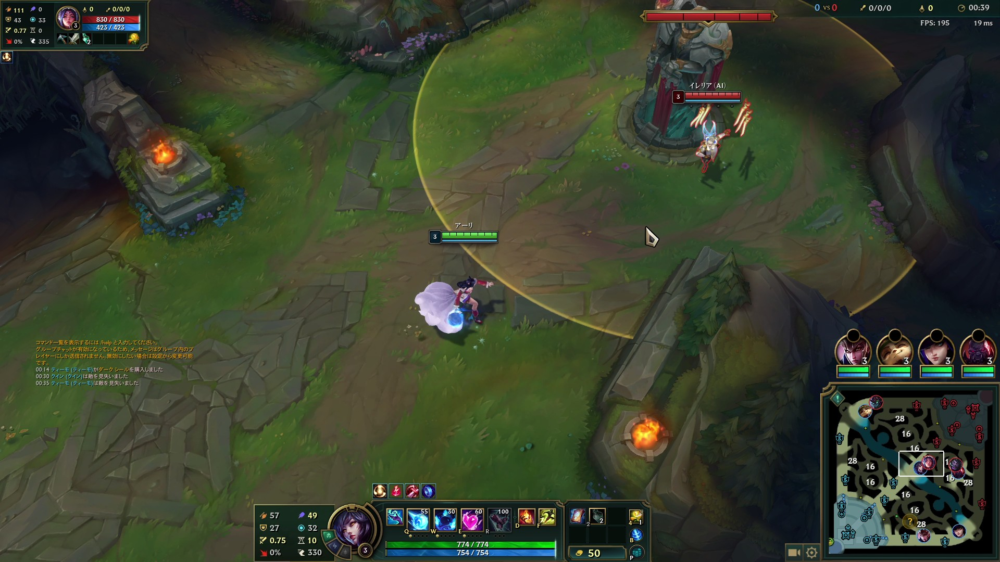
憎き奴らも同じく、ゴールドと経験値を獲得するために、「レーン」にやってきて「ミニオン」を狙っている。
しかし、勝つためには”敵より強くなる”必要がある、となれば、相手にゴールドや経験値を渡したくない・・・ですよね？
・・・なら、邪魔をしてやりましょう！
相手がミニオンを攻撃しているところに合わせて、敵にスキルを当ててみよう。
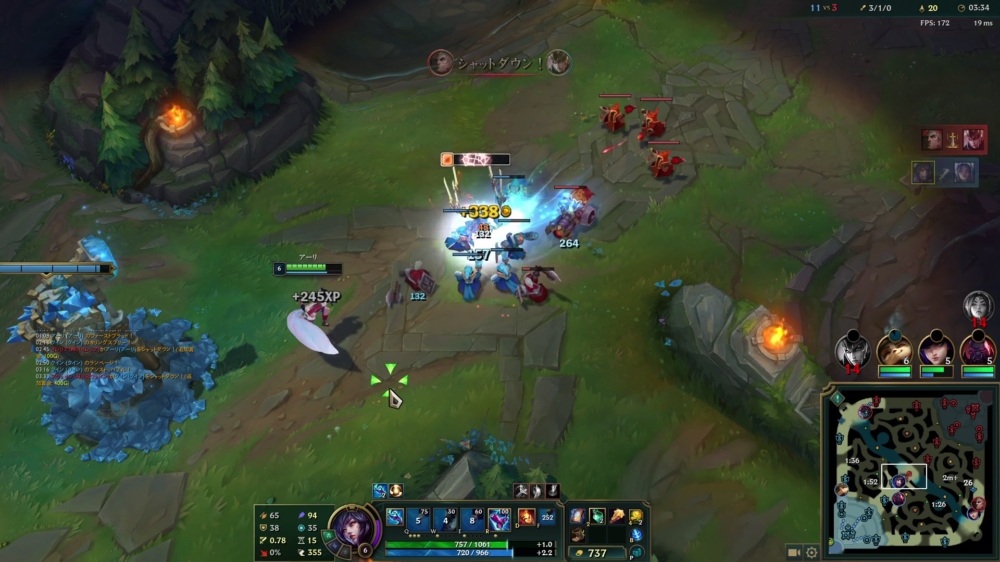
おお！スキルを当てて見事敵チャンピオンのキルに成功！
敵チャンピオンをキルすると、追加でゴールドと経験値を獲得することができる。
さらに、タワーを攻撃することで、一定のラインまで削ると「タワープレート」を破壊でき、追加でさらにゴールドを獲得できる。

このように、敵チャンピオンを倒すと大きなリードに繋がるので、積極的に敵を攻撃してキルを狙ってみよう。
そして作った有利を使って、タワーを折って・・・
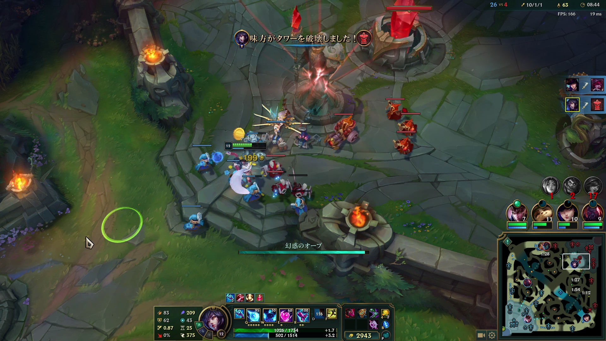
中盤以降はチーム全体で集団戦！
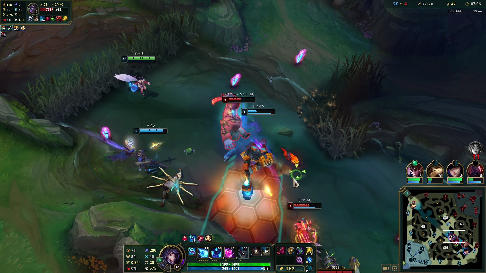
集団戦に勝利してバフを獲得！
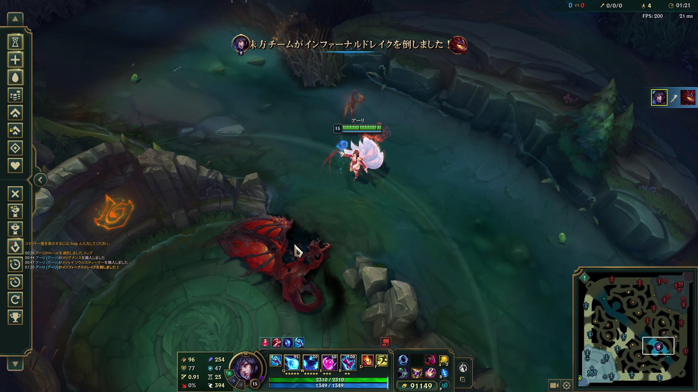
そのまま押し切って勝利だ！
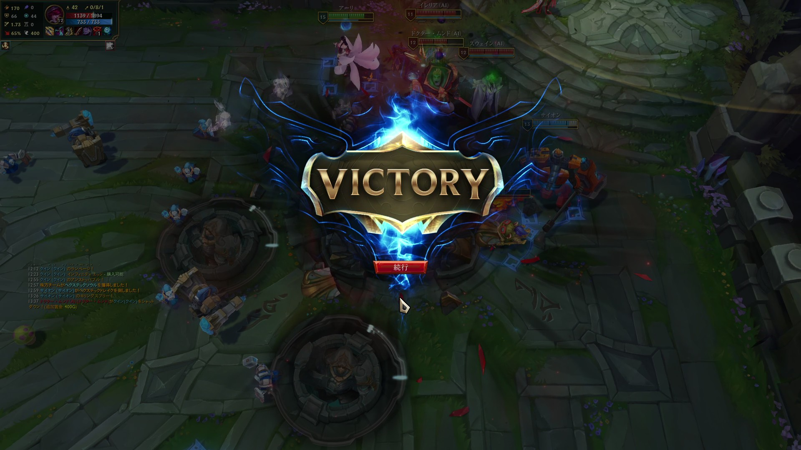
１７０以上のチャンピオンと、そのロールについて
プレイヤーが操作するキャラクター、それがチャンピオン。
ゲーマーなら、彼女を見たことがあるという人もいるだろう。

彼女こそがLOLの顔、そしてLOLのアイドル的存在、「アーリ」だ。
彼女のロールは「メイジ」。ロールについては後述するので、また後ほど。
敵を魅了し、一瞬でその生気を奪い取る九尾の狐。それがアーリだ。
各チャンピオンには、それぞれ「パッシブ」「Q」「W」「E」「R」（※デフォルトキー）合わせて５つのスキルを持っている。
アーリのスキルを例として説明しよう
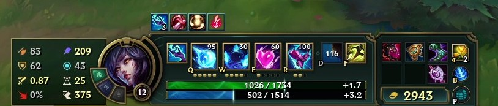
- パッシブ・・・敵チャンピオンをキル、またはミニオンを９体キルで体力を回復。
- Qスキル・・・自身に向かって往復するオーブを放つ。帰り際のオーブはダメージが上がる。
- Wスキル・・・自身の移動速度が上昇し、敵に３つの火の玉を当てる。
- Eスキル・・・投げキッスを放ち、当たった対象にダメージ＆「チャーム」状態にする。
- Rスキル・・・合計３回ブリンク可能になり、発動ごとに敵にダメージ。キル、またはアシストで再度１回使えるようになる。
このゲーム最大の特徴としてよく挙げられるのは、そのチャンピオンの多さだ。
２０２６年９月段階で、なんとその総数は170以上。
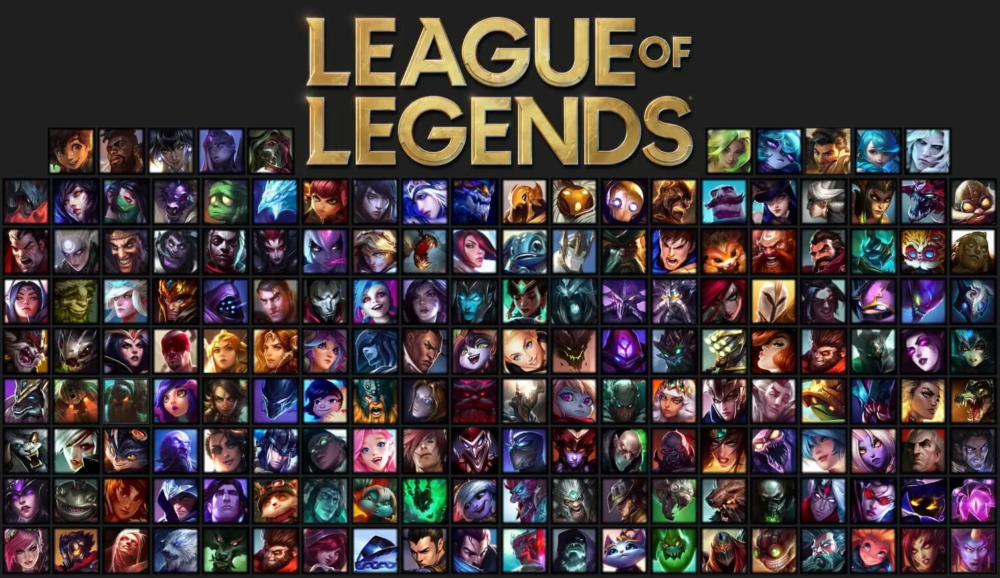
↑約５年前
それぞれが固有のスキルを持っており、誰一人として同じ存在はいない。
が、各キャラクターには戦い方によって、「ロール」という分類がされているので、それを紹介していこう。
メイジ
戦場を支配する魔術師。圧倒的な魔法で戦況を操り、敵を翻弄する。
アサシン
影より忍び寄る暗殺者。持ち前の機動力を活かして標的に接近し、一瞬のうちに始末する。
ファイター
戦場を切り開く戦士。力と技を駆使して敵陣に飛び込み、敵をねじ伏せる。
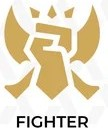
タンク
不壊の要塞。鋼の肉体で敵の猛攻を受け止め、チームの壁となる。
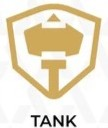
マークスマン
勝利を撃ち抜く主砲。他の追随を許さぬ圧倒的な継続火力を持ち、敵を撃ち抜く。
サポート
勝利へと導く先導者。味方に支援、敵に妨害を与え、仲間を輝かせる立役者となる。
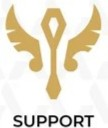
５つのレーンについて

さて、ここまでチャンピオンのざっくりとしたロールを紹介してきたが、次に説明するのはそのチャンピオンが向かう「レーン」についてだ。
それぞれのチャンピオンには得意、不得意があり、それに基づいて一番最適解となるレーンに向かうのが基本となっている。
さっそく、合計3つのレーン、MID、TOP、BOTと、特殊な2つのJG、SUPのレーンについて紹介していこう。
MIDレーン
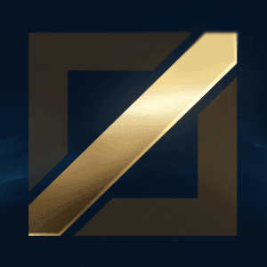
マップ中央に位置するレーン。試合全体への影響力が高く、主人公気質なプレイヤーに人気な、LOLの花形。
適正ロール・・・メイジ／アサシンTOPレーン
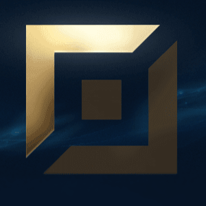
マップ上側に位置するレーン。自身の腕前とチャンピオンのパワーで対面と勝敗をはっきりさせたいデュエリスト気質の荒くれ者が集う、LOLの決闘場。
適正ロール・・・ファイター／タンクBOTレーン
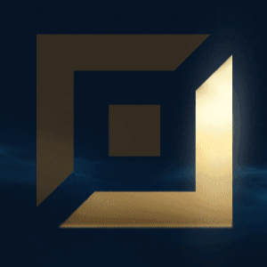
マップ下側に位置するレーン。サポートと共に二人三脚で行動し、仲間と連携して勝利を掴みたいプレイヤーに人気な、唯一のデュオレーン。
適正ロール・・・マークスマン／メイジJGレーン
レーン間のジャングルを駆け巡り、試合全体を序盤から終盤まで自らの手で動かしたいプレイヤーに人気な、LOLの知将レーン。
適正ロール・・・ファイター／アサシン／タンクSUPレーン
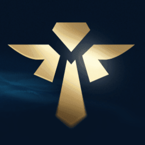
BOTレーナーと共に行動し、支え、仲間を勝利へ導きたいプレイヤーに人気な、チーム全体の先導者。
適正ロール・・・サポート／タンク／メイジチャンピオン診断
最後に、君におすすめのチャンピオンを診断してみよう！
やり方は簡単、合計３つの質問に答えるだけ。
それじゃあ早速行ってみよう！
さあ、診断結果として出てきたチャンピオンと共に、キミもサモナーズリフトへ・・・
「やっぱり始めるのは不安！！！」
「170体もいて覚えられる気がしない。」
「ルール複雑・・・」
・・・そんなキミでも大丈夫！最初は周囲も初心者だ。
一気に覚えなくても、プレイしながら一つ一つ覚えていけば問題ナシ！
それでも心配だというのなら、LOLの他モードで遊んでみるのも一つの手だろう。
さあ、キミもチャンピオン達と共に、サモナーズリフトへ降りたとう！！！
グッドラック、新たなサモナー。
～サモナーズリフトへようこそ～
League of Legendsの公式サイトへLOLのアニメーション作品、アーケインについて
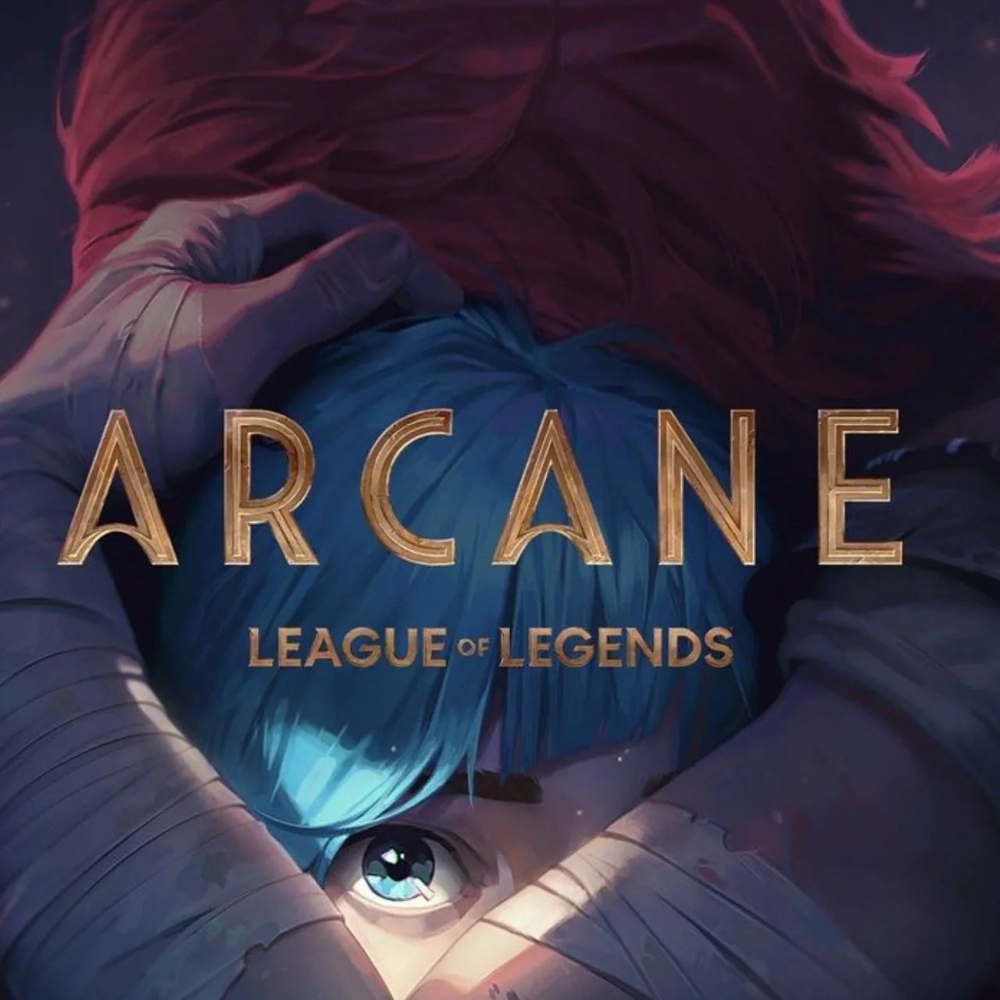
League of Legends原作のNetFlixアニメーションシリーズ『Arcane』。
世界の魔法と独自の科学技術、「ヘクステック」により進歩した、豊かで先進的な進歩の都市「ピルトーヴァー」と、その輝かしい文明と裏腹に、暴力が支配する貧しく抑圧された地下都市「ゾウン」。
そんな地下都市ゾウンに住んでいた、ヴァイとジンクスというチャンピオン姉妹を中心とした物語。
フル3DCGによる圧倒的な映像美、複数のアーティストによる音楽を織り交ぜて描かれるその物語は、全世界の人々を魅了し、その人気はNetFlixで配信されていた『イカゲーム』から首位を奪い、世界53カ国でランキング1位に躍り出るほどだ。
ゲーム原作アニメーション作品として初めてエミー賞「優秀アニメーション番組賞」を受賞するなど、数々の快挙を成し遂げている。
原作を知らなくても楽しめる作品としての完成度を誇り、この作品をきっかけにLOLを始めたプレイヤーもかなりの数。
1話50分の9話、2シーズン構成でNetFlix限定公開として配信中だ。
余談だが、筆者の母親は２日で全部見終わっていた。
「めっちゃおもろい」とのことなので、LOLを始める気はなくても、アーケインを見てみる価値はあるだろう。